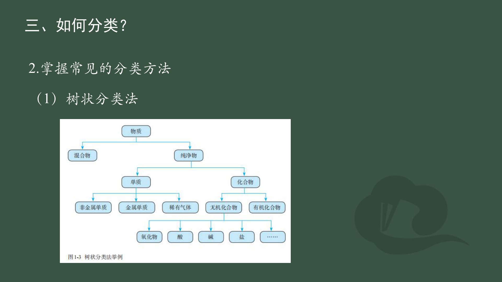

先补判断依据，再做新题
根据你提供的 2026 年 9 月校内试卷第 1–31 题，补第一章最容易断开的推理链。下面的练习是课程原创迁移题，试卷不是高考真题。
学习方法：先读“必须记住”，自己判断；点选后才看解析，再口头回答“换个条件”。这条路径不改变原有教材顺序，也不要求使用 AI 导师。
分类树是所有题的起点

沿原课件树状图读：先问样品里有几种物质，再给单一物质分类。冰水混合物只有 H₂O，仍是纯净物；稀硫酸含水和 H₂SO₄，是混合物。
原课程已经会的，与这次需要补的
已有基础
纯净物/混合物、氧化物、NaCl 状态与导电、常见沉淀、离子方程式“写拆删查”、基本化合价和氧化还原。
这次补强
酸式盐与酸根名称、难溶碱和弱碱、复分解制盐四类路径、一个反应同时生成沉淀和水时的配平、FeSO₄ 陌生情境中的“实验现象—粒子—方程式”。
试卷的第 29–31 题把几个小概念连成一道题。会选 A、B、C、D，并不等于能独立写出分类依据、反应物和守恒式。
让分类和反应在脑中“动起来”
按步骤看粒子怎样变，再用一句话讲出判断依据。点击任一步可重看；动画不自动翻页。
这是课程自制示意动画，粒子相对位置不代表真实微观尺度。
“硝”“硫”“盐”怎样进入酸的名字？
硝石 → 硝酸体系
硝石常指硝酸钾 KNO₃，是古人认识并使用的天然盐。今天用同一个名称家族记：HNO₃ 是硝酸，NO₃⁻ 是硝酸根，KNO₃ 是硝酸钾。早期确有从硝酸盐制硝酸的做法，但这段历史不能代替现代命名规则。
硫酸与“矾油”
硫酸曾称“矾油”，历史上可从绿矾等硫酸盐相关材料制得。今天看粒子：H₂SO₄ 对应硫酸，SO₄²⁻ 对应硫酸根；FeSO₄ 是硫酸亚铁，不因为含“硫酸”二字就变成酸。
盐酸与食盐
历史制酸中，食盐 NaCl 与硫酸反应可以产生氯化氢；氯化氢进入水才得到盐酸。现代分类时必须分开 HCl(g) 这一纯物质与盐酸这一水溶液。
历史只提供理解线索，不能把“先有某名称，所以一定按某顺序命名”当成已证实的词源结论。资料：美国化学会：硝酸钾与硝石、1891 年硝酸盐制硝酸研究、美国化学会：硫酸历史、美国化学会：食盐制氯化氢的历史。
把口诀当检索线索，再看例外与条件
| 要记什么 | 一句记法 | 本卷怎么用 |
|---|---|---|
| 酸、碱、盐初判 | “酸看电离的 H⁺，碱看电离的 OH⁻，金属或铵根配酸根常为盐。”（课程归纳） | NaHSO₄ 虽有 H，仍是酸式盐；Na₂CO₃ 俗称纯碱，仍是盐。先确认是纯物质，还是溶液样品。 |
| 盐的溶解性 | “钾钠铵硝皆可溶；硫酸盐不溶钡和铅；碳磷酸盐多不溶。”（苏州教科院口诀节选） | KNO₃ 易溶；BaSO₄ 难溶。口诀里的“多”表示还有条件和例外，具体题目要查溶解性表。 |
| 离子式 | “写、拆、删、查”（课程已有记法） | 难溶的 Fe(OH)₂ 不拆；Ba(OH)₂ 与 H₂SO₄ 同时得沉淀和水，不能只留一个产物。 |
口诀来源与核对：苏州市教育科学研究院《化学知识点背诵口诀》。只取与第一章直接相关的片段，不把口诀当成完整溶解度表。
纯酸、酸溶液和氨水是不是同一类样品？
必须记住：H₂SO₄、HNO₃、HCl、NH₃ 这类化学式表示相应物质；稀硫酸、硝酸溶液、盐酸、氨水都含水，是混合物。单说“硫酸”“硝酸”要结合题目语境；“浓”指浓度高，不等于没有水。
氨水的边界：NH₃(g) 是一种纯物质；氨水是 NH₃ 与水形成的体系，并有少量 NH₄⁺、OH⁻。NH₃·H₂O 是中学常用的水合写法，不能用来表示整瓶氨水只有一种物质。
分类、命名与溶解性
必须记住：先分混合物与纯净物；酸在水中电离产生的阳离子都是 H⁺，碱产生的阴离子都是 OH⁻，盐由金属离子或 NH₄⁺ 与酸根构成。酸式盐仍是盐，如 NaHSO₄、NaHCO₃。
名称链：HNO₃ 是硝酸，NO₃⁻ 是硝酸根；HNO₂ 是亚硝酸，NO₂⁻ 是亚硝酸根。NaNO₂ 中 N 为 +3，NaNO₃ 中 N 为 +5。化学式中的“硝”不是凭 N 的个数直接命名。
溶解性：硝酸盐通常可溶；常见难溶氢氧化物包括 Fe(OH)₂、Fe(OH)₃、Cu(OH)₂。写离子方程式时，难溶固体不拆。
从“会反应”走到“会写方程式”
必须记住：判断复分解反应能否进行，先看产物有没有沉淀、气体或水等。写离子式按“先写配平的化学式 → 拆可溶强电解质 → 删相同旁观离子 → 查原子和电荷”。
容易漏的两个条件：Mg(OH)₂ 是难溶固体，遇酸时不能写成“OH⁻”；Ba(OH)₂ 与 H₂SO₄ 同时生成 BaSO₄ 沉淀和水，不能只留下一个 H⁺ 与 OH⁻。
展开：第 29 题这类串联题，如何由类别推方程式？
| 组合 | 先找变化 | 示范 |
|---|---|---|
| 一水合氨 + 盐酸 | 弱碱与酸生成铵盐和水；弱碱在净离子式中不拆 | NH₃·H₂O + HCl → NH₄Cl + H₂O |
| 硫酸氢钠 + 氢氧化钠 | 酸式盐仍是盐，但溶液中的酸性氢能被 OH⁻ 中和 | NaHSO₄ + NaOH → Na₂SO₄ + H₂O |
| 氢氧化钡 + 碳酸钾 | Ba²⁺ 与 CO₃²⁻ 生成难溶盐 | Ba(OH)₂ + K₂CO₃ → BaCO₃↓ + 2KOH |
| 二氧化硫 + 氧化钙或碱 | SO₂ 是酸性氧化物，分别与碱性氧化物、碱反应 | SO₂ + CaO → CaSO₃；SO₂ + Ba(OH)₂ → BaSO₃↓ + H₂O |
先读题目给出的物质，再判断是否在题设条件下能反应；示范中的弱碱、一水合氨和亚硫酸盐也要与名称对应起来。
展开：用四类复分解反应制 Na₂SO₄，为什么不能只背产物？
| 类别 | 可行示例 | 让反应进行的产物 |
|---|---|---|
| 酸 + 碱 | H₂SO₄ + 2NaOH → Na₂SO₄ + 2H₂O | 水 |
| 酸 + 盐 | H₂SO₄ + Na₂CO₃ → Na₂SO₄ + CO₂↑ + H₂O | 气体和水 |
| 碱 + 盐 | 2NaOH + CuSO₄ → Na₂SO₄ + Cu(OH)₂↓ | 沉淀 |
| 盐 + 盐 | Na₂CO₃ + MgSO₄ → Na₂SO₄ + MgCO₃↓ | 沉淀 |
这里强调方程式的学习示例；实际制备还需考虑纯度、过滤等操作。盐 + 盐的示例取可溶盐水溶液。
遇到陌生 FeSO₄，先找粒子与证据
必须记住：FeSO₄ 溶液里先列 Fe²⁺、SO₄²⁻；每加入一种试剂，问有无更稳定的产物或金属置换，再写净离子式。Zn 置换 Fe、NaOH 生成 Fe(OH)₂、BaCl₂ 生成 BaSO₄；HCl 混入 FeSO₄ 后若没有明显现象，单凭“没看见”不能证明所有可能反应都不存在。
留意时间：新生成的 Fe(OH)₂ 通常为白色，暴露空气后可能被氧化并逐渐变色；观察到后续颜色，不要把它直接写成第一步产物。
离子能否共存，先找会结合的两位
必须记住：看沉淀、气体、弱电解质；题目若说“无色透明”，还要排除明显有色离子。不能只看四个离子各自是否能溶。
本卷串联：H⁺ 与 CO₃²⁻ 会生成 CO₂ 与水；Cu²⁺、Mg²⁺、Fe³⁺ 与足量 OH⁻ 可形成难溶氢氧化物；Ca²⁺ 与 CO₃²⁻ 形成 CaCO₃。K⁺、Ba²⁺、Cl⁻、OH⁻ 在通常稀水溶液条件下可大量共存。
类别通性要问“都能吗”，一步转化要问“条件呢”
必须记住：同类物质性质有共同点，但“某个碱能发生”不等于“所有碱都能发生”。制盐可从酸、碱、盐之间的可行反应找产物；金属与酸的置换还受金属活动性和酸的性质限制。
特殊题：H₃PO₄ 的三个 H 可逐步参与中和；H₃PO₂ 虽有三个 H，却只有一个可电离的酸性氢，所以常说是一元酸。酸的元数不能只数化学式中的 H。无机化学教材：H₃PO₂ 的结构与一元酸性质。
化合价、电离式与混合实验一起核对
必须记住：中性化合物各元素化合价代数和为 0；多原子离子为其电荷数。一个化学式中同种元素可能处在不同粒子里，如 NH₄NO₃ 的两个 N，不能强行给同一个化合价。
展开：第 26 题四个式子怎样逐个算？
| 式子 | 计算依据 | 指定元素价态 |
|---|---|---|
| Na₂SO₃ | 2(+1)+x+3(−2)=0 | S 为 +4 |
| Fe₂(OH)₂Cl₄ | 2x+2(−1)+4(−1)=0 | Fe 为 +3 |
| NH₄NO₃ | NH₄⁺：x+4(+1)=+1；NO₃⁻：y+3(−2)=−1 | 两个 N 分别为 −3、+5 |
| MnSO₄ | SO₄²⁻ 整体为 −2，中性盐中 Mn 与它平衡 | Mn 为 +2 |
氯还可呈多种正化合价。写氯的氧化物时先选氯的价态，再用 O 为 −2 配平，例如 Cl₂O 中 Cl 为 +1，Cl₂O₅ 中 Cl 为 +5；单质 Cl₂ 中为 0。
四个电离式：H₂SO₄ → 2H⁺ + SO₄²⁻；KNO₃ → K⁺ + NO₃⁻；Ba(OH)₂ → Ba²⁺ + 2OH⁻；Fe₂(SO₄)₃ → 2Fe³⁺ + 3SO₄²⁻。写完逐项检查原子数和总电荷。
第 28 题实验：Ca(OH)₂(aq) + K₂CO₃(aq) → CaCO₃↓ + 2KOH(aq)，白色沉淀；K₂CO₃(aq) + 2HCl(aq) → 2KCl(aq) + H₂O(l) + CO₂↑，产生气泡。先写整式，再删去没有变化的离子。